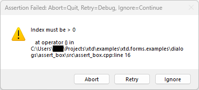
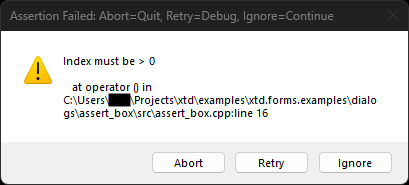
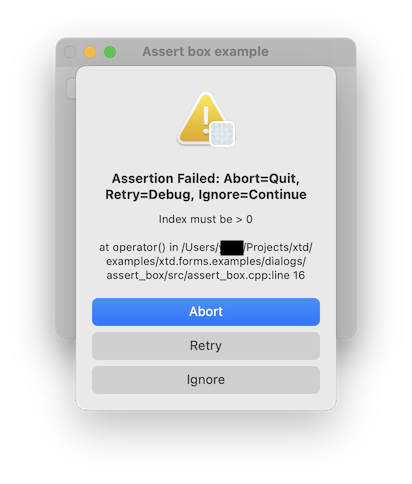
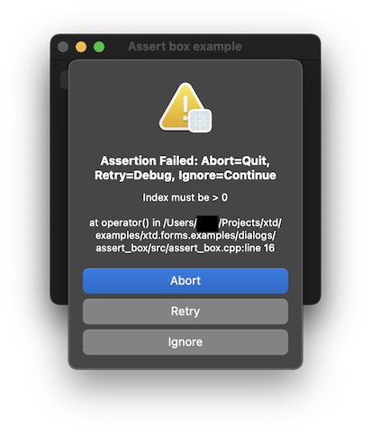
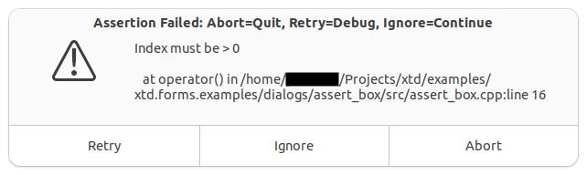
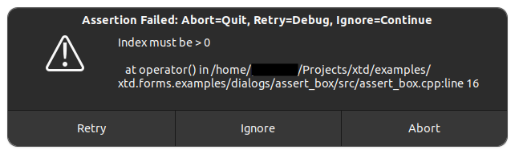

|
xtd
0.2.0
|
Loading...
Searching...
No Matches
assert_box.cpp
demonstrates the use of xtd::forms::assert_box dialog.
- Windows
- 

- macOS
- 

- Gnome
- 

#include <xtd/xtd>
using namespace xtd::diagnostics;
class form1 : public form {
public:
form1() {
text("Assert box example");
controls().push_back(button1);
button1.location({10, 10});
button1.auto_size(true);
button1.text("assert...");
button1.click += delegate_ {
default: break;
}
};
}
private:
button button1;
};
auto main() -> int {
application::run(form1 {});
}
static void debug_break()
Signals a breakpoint to an attached debugger.
static stack_frame current(const xtd::diagnostics::source_location &value=xtd::diagnostics::source_location::current()) noexcept
Crates a new xtd::diagnostics::stack_frame object corresponding to the location of the call site.
#define delegate_
The declaration of a delegate type is similar to a method signature. It has a return value and any nu...
Definition delegate.hpp:900
@ retry
The dialog box return value is Retry (usually sent from a button labeled Retry).
Definition dialog_result.hpp:53
@ abort
The dialog box return value is Abort (usually sent from a button labeled Abort).
Definition dialog_result.hpp:51
The xtd::diagnostics namespace provides classes that allow you to interact with system processes,...
Definition assert_dialog_result.hpp:10
Contains classes that represent ASCII and Unicode character encodings; abstract base classes for conv...
Definition basic_string_builder.hpp:17
Generated on Mon Aug 18 2025 18:41:59 for xtd by Gammasoft. All rights reserved.